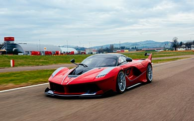
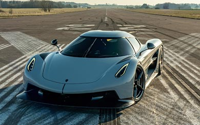
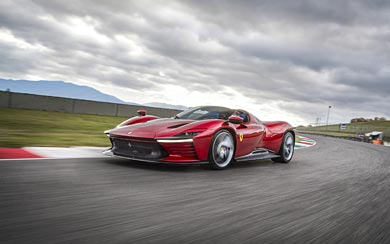
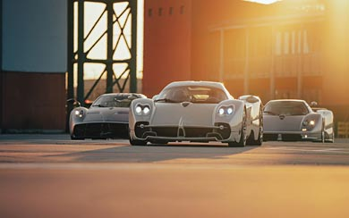

MY TOP 5 FAVOURITE CARS
Ferrari FXX K

Quick Facts Table
| Engine |
Hybrid V12 |
| Horsepower |
1,036 to 1,050 hp |
| Top speed |
350 km/h |
| 0 to 100 km/h |
2.5 to 2.6 seconds |
| Price range |
$2.5 to $3 million USD |
Key Features
-
Track-Only Machine, Not road legal
-
Advanced KERS System, F1-derived hybrid tech
-
Active Aerodynamics, Massive downforce
-
Corse Clienti Program, Ferrari-managed racing experience
Why i like this car?
The Ferrari FXX-K stands out to me because of its aggressive shape and highly aerodynamic design, which make
it look purposeful and engineered for pure performance. It is incredibly fast, yet at the same time
undeniably beautiful in its proportions and stance. I especially admire the raw sound of its naturally
aspirated V12 engine — deep, sharp, and emotional in a way only a Ferrari can deliver. The interior feels
focused and race-ready, giving a true driver-centric experience. Even the large rear wing and its active
aerodynamic elements, which adjust while driving, add to the drama and make the car feel alive on the track.
Back to top
Bugatti Bolide

Quick Facts Table
| Engine |
W16 |
| Horsepower |
1,600 hp to 1,850 hp |
| Top speed |
500 km/h |
| 0 - 100 km/h |
2.17 seconds |
| Price range |
$4 to 4.7 million USD |
Key Features
-
Ultra-Lightweight Build, Extreme power-to-weight
-
Massive Downforce, Race-level aerodynamics
-
Track-Only Machine, Not road legal
-
Carbon Fiber Monocoque, High rigidity & safety
Why i like this car?
I like the Bugatti Bolide because it feels like a pure engineering experiment turned into reality. Its
extreme design and sharp aerodynamic body make it look aggressive and purpose-built for the track. The
massive W16 engine and insane horsepower make it one of the most powerful cars ever created, which I really
admire.
I also like how lightweight and focused it is — no unnecessary luxury, just raw performance. It does not try
to be comfortable; it tries to be the fastest and most extreme, and that dedication makes it special to me.
Back to top
Koenigsegg Jesko Absolut

Quick Facts Table
| Engine |
v8 |
| Horsepower |
1,600 hp |
| Top speed |
531 km/h |
| 0 - 100 km/h |
2.5 to 3.0 seconds |
| Price range |
$3.4 to $4 million USD |
key features
- 5.0L Twin-Turbo V8, Up to 1,600 hp
- Light Speed Transmission, 9-speed multi-clutch
- Ultra-Low Drag (0.278 Cd), Built for top speed
- Carbon Fiber Monocoque, Lightweight & rigid
Why i like this car?
I like the Koenigsegg Jesko Absolut because it represents pure speed engineering at its highest level. Unlike
cars built mainly for downforce or track aggression, this one is designed to cut through the air with
incredible efficiency. The twin-turbo V8 producing up to 1,600 hp feels both powerful and precise, and the
advanced Light Speed Transmission makes it even more fascinating from a technical point of view.
What I admire most is its focus on breaking limits — especially in top speed. It does nOt rely on loud
styling alone; it relies on intelligent design and aerodynamics, which makes it feel futuristic and
purposeful.
Back to top
Ferrari Daytona SP3

Quick facts
| Engine |
V12 |
| Horsepower |
828 hp |
| Top speed |
340 km/h |
| 0 - 100 km/h |
2.85 s |
| Price range |
$2.2 to $2.3 million USD |
key features
- 6.5L Naturally Aspirated V12, 840 hp
- Targa Top Design, Open-roof driving
- Limited to 599 Units, Highly exclusive
- Carbon Fiber Body, Lightweight & rigid
Why i like this car?
I like the Ferrari Daytona SP3 because it perfectly blends modern performance with classic Ferrari heritage.
Its design feels timeless, inspired by old racing legends, yet it still looks bold and futuristic. The
naturally aspirated V12 is one of the biggest reasons I admire it — high-revving, pure, and emotional
without any hybrid assistance.
I also appreciate that it is exclusive and limited, which makes it feel special and rare. It is not just
about
speed; it is about style, history, and the raw sound of a true Ferrari engine. That combination makes it
very
appealing to me.
Back to top
Pagani Utopia

Quick facts
| Engine |
V12 |
| Horsepower |
852 to 864 hp |
| Top speed |
350 km/h |
| 0 - 100 km/h |
2.8-3.1 second |
| Price range |
$2.2 to $3.5 million+ USD |
key features
- 6.0L Twin-Turbo V12, 850+ hp
- Manual Gearbox Option, Pure driver focus
- Carbon-Titanium Chassis, Ultra-light & strong
- Handcrafted Interior, Mechanical art design
Why i like this car?
I like the Pagani Utopia because it feels like a perfect mix of art and engineering. The design is elegant
yet aggressive, with every curve and detail looking carefully crafted rather than just shaped for speed.
What really attracts me is the twin-turbo V12 — powerful, smooth, and emotional at the same time.
I also admire the option of a manual gearbox, which makes the driving experience feel more connected and
personal. The interior, with its exposed mechanical elements and handcrafted finish, makes the car feel like
a moving sculpture. It is not just about performance; it is about passion and craftsmanship.
Back to top